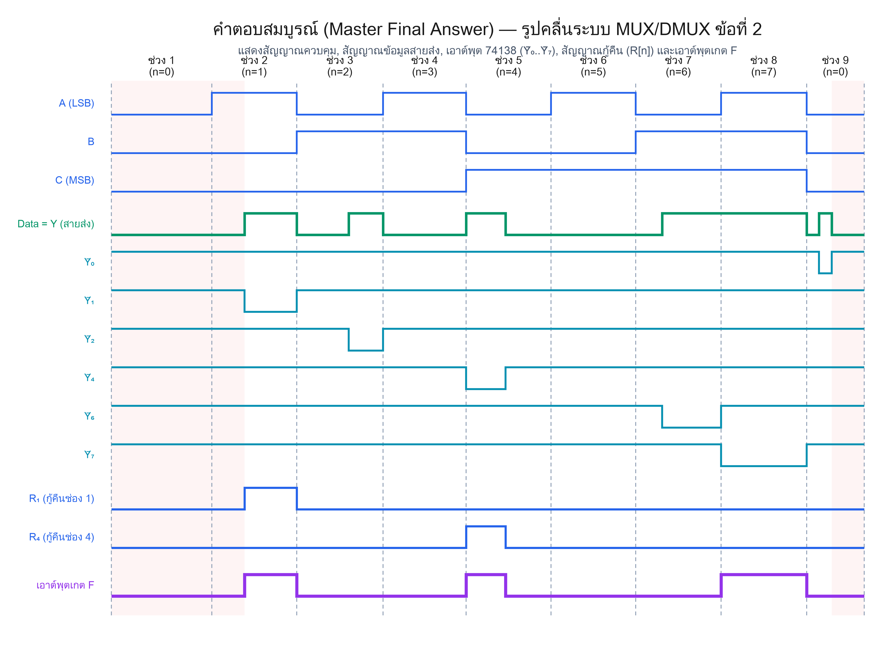
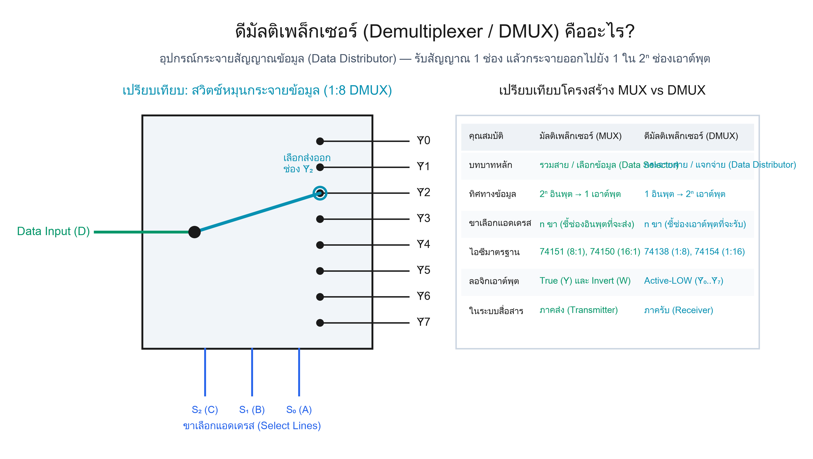
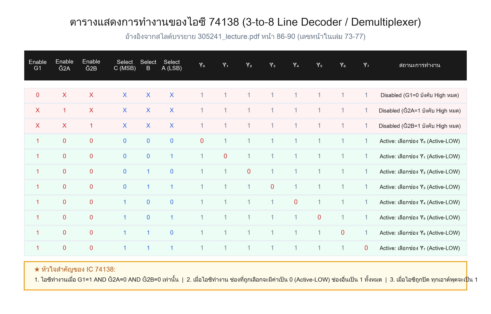
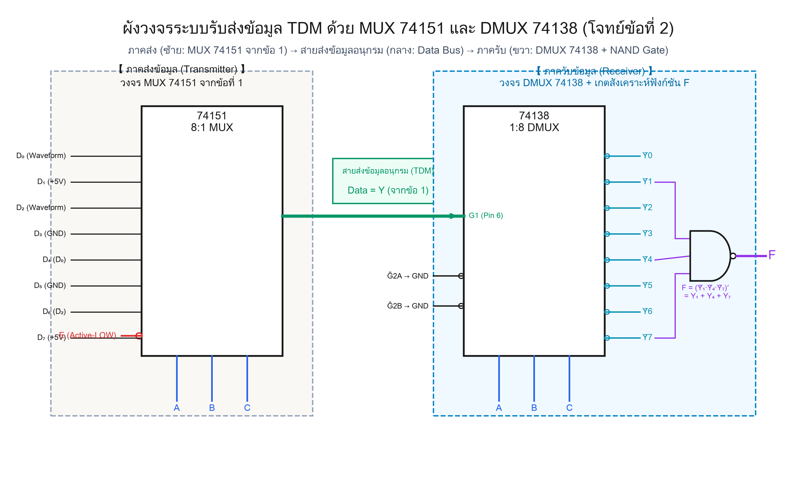
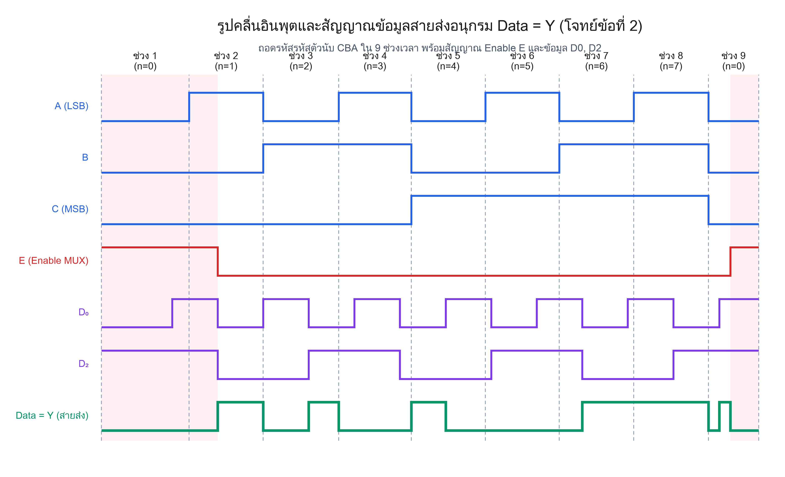
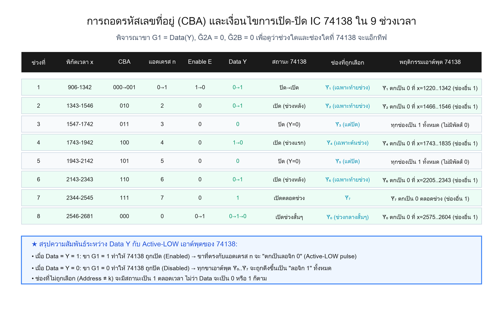
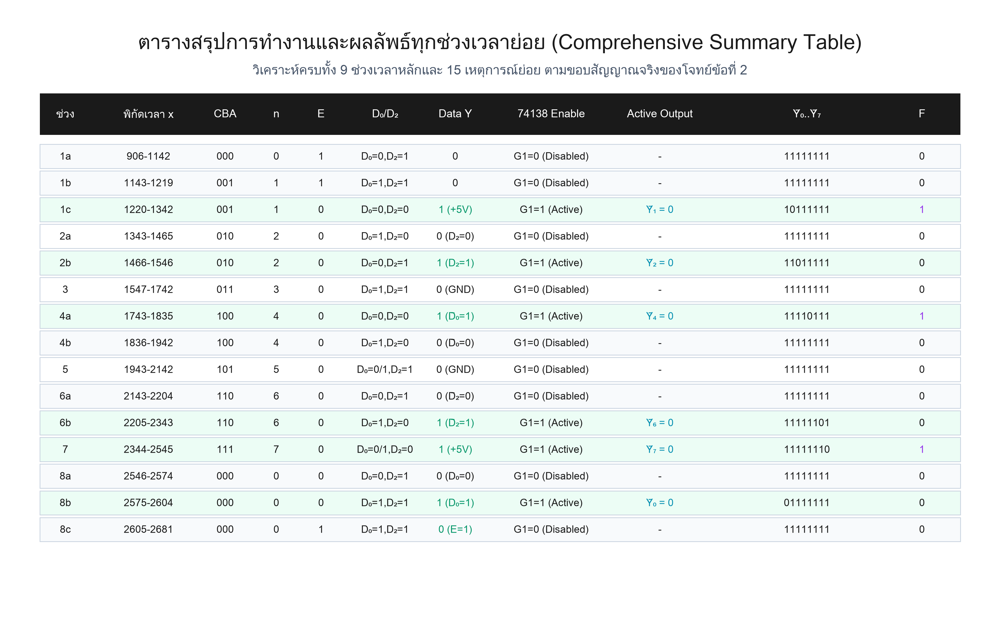
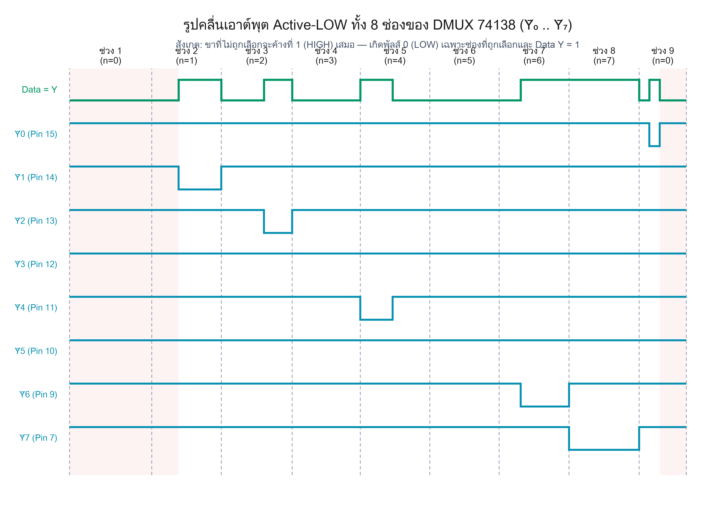
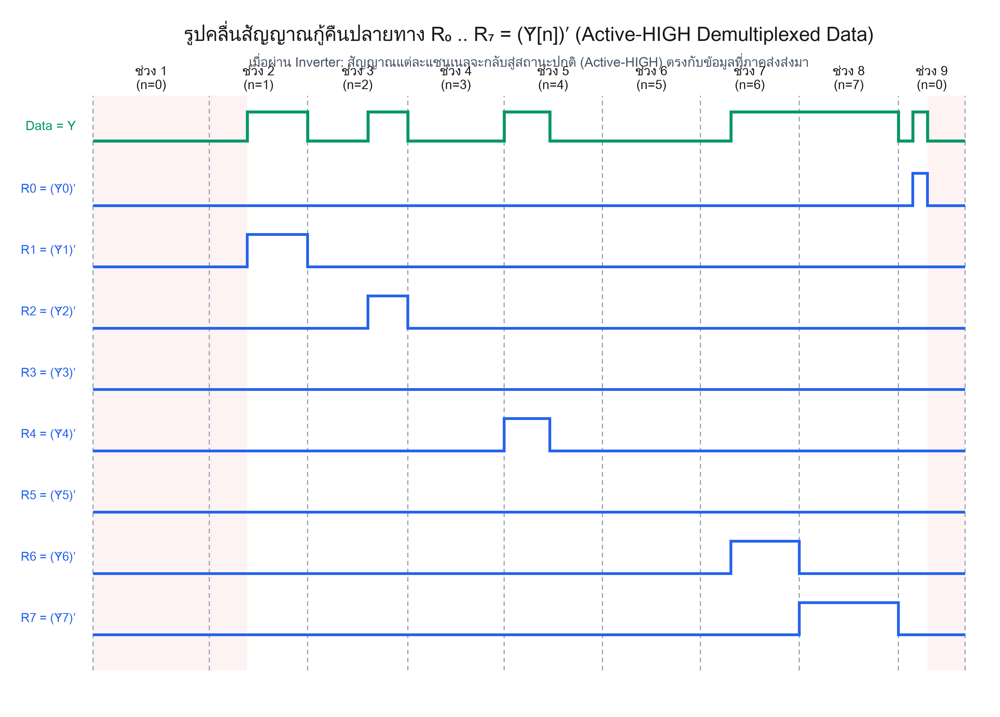
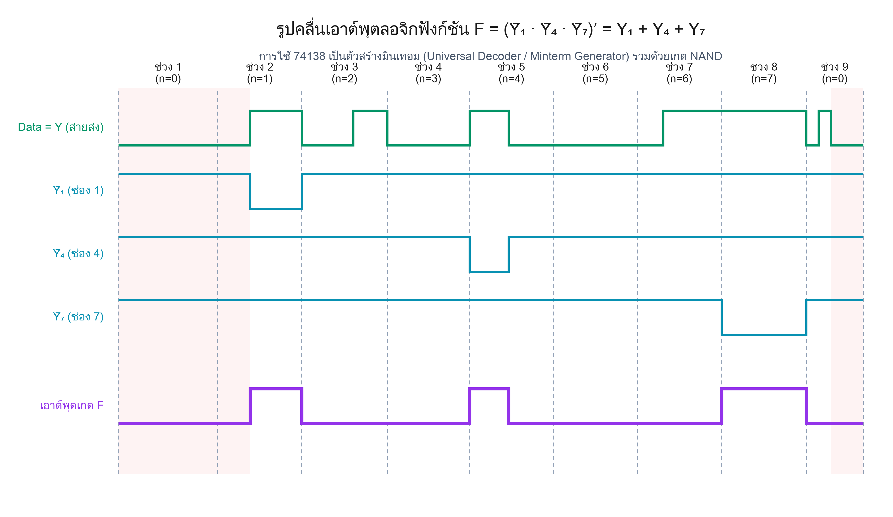

ระบบส่งสัญญาณแบบแบ่งเวลา (TDM Link) ต่อยอดจากข้อ 1 สู่ภาครับสมบูรณ์ · อ้างอิงทฤษฎีจากสไลด์บรรยาย 305241
2. จากระบบการรวมส่งสัญญาณและแยกรับสัญญาณแบบแบ่งเวลา (TDM Communication System) ที่กำหนดให้:
ภาคส่งใช้ไอซี 74151 (8:1 MUX) จากข้อที่ 1 ส่งข้อมูลอนุกรม Data = Y ผ่านสายส่งร่วม มาเข้าที่ขา G1 ของไอซีดีมัลติเพล็กเซอร์เบอร์ 74138 (1:8 Demultiplexer) โดยต่อขา Ḡ2A = GND และ Ḡ2B = GND พร้อมซิงโครไนซ์ขาเลือก A, B, C ทั้งสองฝั่ง
(ก) จงเขียนรูปคลื่นเอาต์พุต Ȳ₀, Ȳ₁, Ȳ₂, Ȳ₃, Ȳ₄, Ȳ₅, Ȳ₆, Ȳ₇ ทั้ง 8 ช่องของไอซี 74138
(ข) จงเขียนรูปคลื่นสัญญาณกู้คืนปลายทาง R₀ .. R₇ เมื่อต่อผ่านอินเวอร์เตอร์ Rₙ = (Ȳₙ)′
(ค) หากนำเอาต์พุต Ȳ₁, Ȳ₄, Ȳ₇ มาต่อเข้าเกต NAND จงหารูปคลื่นเอาต์พุต F = (Ȳ₁ · Ȳ₄ · Ȳ₇)′
— แบบฝึกหัดประยุกต์ MUX/DMUX, สไลด์บรรยาย 305241 หน้า 86–96

Data = Y = 0 → 74138 ถูกปิด → เอาต์พุตทุกช่อง Ȳ₀..Ȳ₇ ถูกดึงขึ้นเป็น 1 ทั้งหมดData = Y = 1 → 74138 เปิดทำงาน → เฉพาะช่องที่ตรงกับแอดเดรส n จะ ตกเป็นลอจิก 0 (Active-LOW) ช่องอื่นเป็น 1F = (Ȳ₁ · Ȳ₄ · Ȳ₇)′ = Y₁ + Y₄ + Y₇ จะเป็น 1 เมื่อช่อง 1, 4 หรือ 7 มีการส่งข้อมูลลอจิก 1

ดีมัลติเพล็กเซอร์ (Demultiplexer, DMUX) คือวงจรลอจิกที่รับสัญญาณข้อมูลเข้าเพียง 1 ช่อง แล้วกระจายออกไปยัง 1 ใน 2ⁿ ช่องเอาต์พุต โดยอาศัยขาเลือก (Select Lines) เป็นตัวบอกพิกัดปลายทาง
| คุณสมบัติ | มัลติเพล็กเซอร์ (MUX 74151) | ดีมัลติเพล็กเซอร์ (DMUX 74138) |
|---|---|---|
| บทบาทในระบบ | ภาคส่ง (Transmitter) รวมหลายช่องลงสายเดียว | ภาครับ (Receiver) แยกสายเดี่ยวออกหลายช่อง |
| อินพุตข้อมูล | 2ⁿ ช่องข้อมูล (D₀..D₇) | 1 ช่องข้อมูลเดี่ยว (Data Input) |
| เอาต์พุต | 1 ช่อง (Y และ W) | 2ⁿ ช่อง (Ȳ₀..Ȳ₇ แบบ Active-LOW) |
| ขาควบคุม | Select A,B,C และ Enable Ē | Select A,B,C และ Enable G1, Ḡ2A, Ḡ2B |

ไอซี 74138 มีขาควบคุมอีนาเบิลทั้งหมด 3 ขา: G1 (Active-HIGH), Ḡ2A (Active-LOW), และ Ḡ2B (Active-LOW)
G1 = 1 AND Ḡ2A = 0 AND Ḡ2B = 0Ḡ2A = 0 และ Ḡ2B = 0 ตลอดเวลา ดังนั้น 74138 จะเปิด-ปิดตามขา G1 = Data(Y) โดยตรง

ระบบสื่อสารแบบแบ่งเวลาประกอบด้วย 3 ส่วนสำคัญ:
Data = YG1 และมีขาเลือก A, B, C เดินตามตัวนับเวลาเดียวกันȲ₁, Ȳ₄, Ȳ₇ เพื่อสังเคราะห์ฟังก์ชัน F

เอาต์พุตของ 74138 มีขีดบน (Inverting Bubble) หมายถึง Active-LOW:
เมื่อถอดสมการจะได้ว่า: ขาที่ไม่ถูกเลือกจะมีค่าเป็น 1 เสมอ และขาที่ถูกเลือกจะมีค่าเป็น 0 เฉพาะเมื่อ Data = 1

| แชนเนล | ช่วงเวลาที่เกิดพัลส์ 0 | พิกัดเวลา x | สาเหตุที่เกิดพัลส์ |
|---|---|---|---|
| Ȳ₀ | ช่วง 8b | 2575..2604 | แอดเดรส n=0 และ D₀=1 ทำให้ Data Y=1 |
| Ȳ₁ | ช่วง 1c | 1220..1342 | แอดเดรส n=1 และ E=0 ทำให้ส่ง D₁=+5V (Data Y=1) |
| Ȳ₂ | ช่วง 2b | 1466..1546 | แอดเดรส n=2 และ D₂=1 ทำให้ Data Y=1 |
| Ȳ₃ | ไม่มี | - | ต่อ GND ที่ภาคส่ง (Data Y=0 ตลอดช่วง) |
| Ȳ₄ | ช่วง 4a | 1743..1835 | แอดเดรส n=4 และ D̄₀=1 ทำให้ Data Y=1 |
| Ȳ₅ | ไม่มี | - | ต่อ GND ที่ภาคส่ง (Data Y=0 ตลอดช่วง) |
| Ȳ₆ | ช่วง 6b | 2205..2343 | แอดเดรส n=6 และ D̄₂=1 ทำให้ Data Y=1 |
| Ȳ₇ | ช่วง 7 | 2344..2545 | แอดเดรส n=7 และ D₇=+5V ทำให้ Data Y=1 ตลอดช่วง |



การนำเอาต์พุต Active-LOW เข้าเกต NAND จะให้ผลลัพธ์เป็นฟังก์ชันรวมมินเทอม (Sum of Minterms):
เอาต์พุต F = 1 ในช่วงเวลา 1c, 4a และ 7 เท่านั้น
แสดงให้เห็นว่า 74138 ทำหน้าที่เป็น Universal Decoder ที่สามารถถอดรหัสมินเทอมใดๆ ในระบบดิจิทัลได้อย่างสมบูรณ์แบบ
| จุดตรวจสอบ | เกณฑ์ความถูกต้อง | สถานะ |
|---|---|---|
| 1. ระดับลอจิกพักของ Ȳ₀..Ȳ₇ | เป็น HIGH (1) ในทุกช่วงที่ไม่ได้แอ็กทีฟ | ✅ ถูกต้อง |
| 2. จำนวนพัลส์ Active-LOW (0) | เกิดขึ้น 7 พัลส์ย่อยตามที่ Data Y = 1 | ✅ ถูกต้อง |
| 3. ช่อง Ȳ₃ และ Ȳ₅ | เป็น 1 ตลอดทั้ง 9 ช่วง (ไม่เกิดพัลส์ 0) | ✅ ถูกต้อง |
| 4. เอาต์พุตเกต F | เป็น 1 เฉพาะช่วง 1c, 4a และ 7 | ✅ ถูกต้อง |